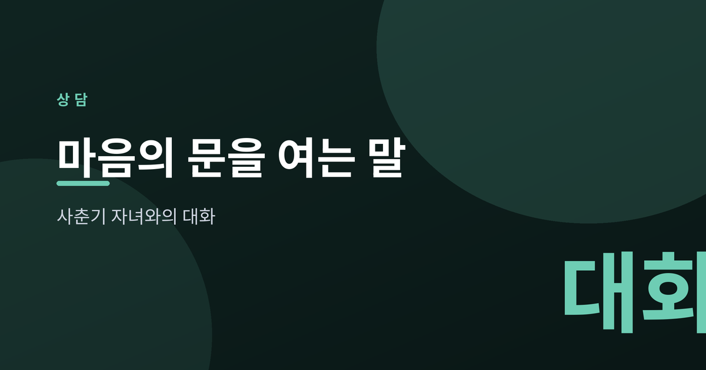
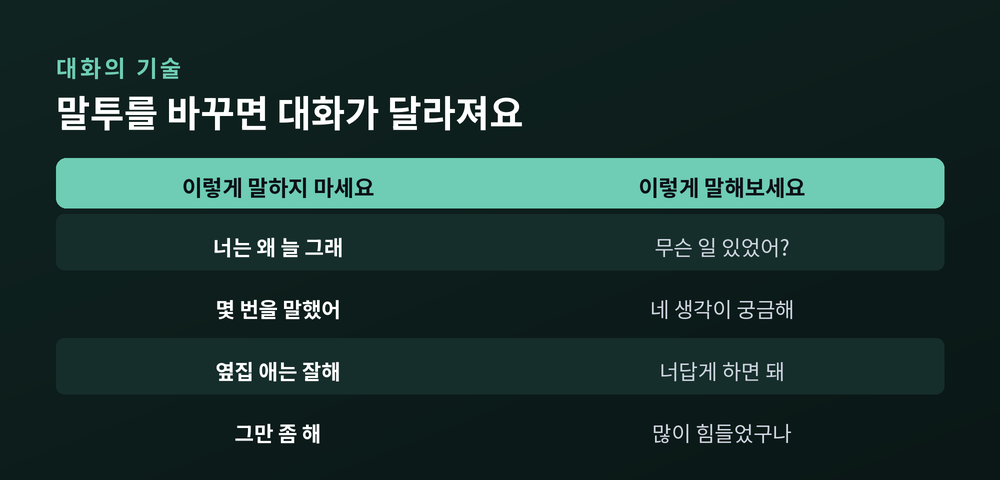
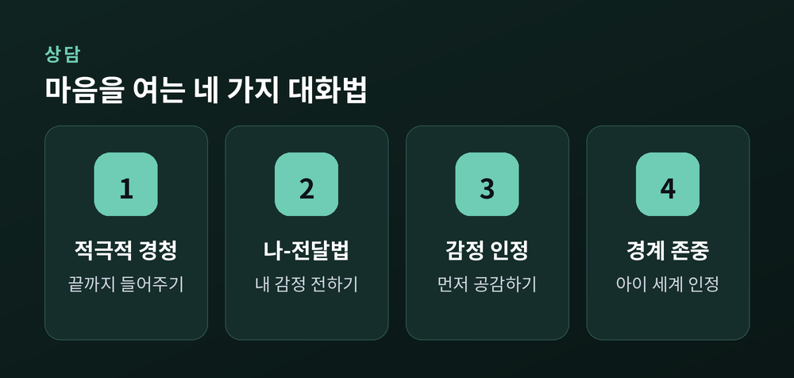
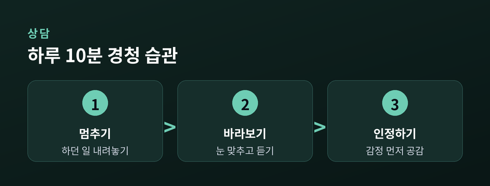

마음의 문을 여는 부모의 말

어느 순간 대답이 짧아지고 방문이 자주 닫히기 시작합니다. 사춘기 자녀를 둔 부모라면 누구나 겪는 변화입니다. 아이가 멀어진 것 같아 서운하고 걱정도 앞서지만, 이 시기의 거리감은 아이가 '나'라는 사람을 세워가는 자연스러운 과정입니다. 부모의 말투를 조금 바꾸는 것만으로도 닫힌 것처럼 보이던 마음의 문은 다시 열릴 수 있습니다.
사춘기에는 뇌와 감정이 빠르게 변하면서 독립 욕구가 커집니다. 부모에게서 조금씩 떨어져 또래와 자기 세계를 넓히려는 이 움직임은 반항이 아니라 성장의 신호입니다. 감정 기복이 크고 예민해지는 것도 이 변화의 자연스러운 일부라고 이해하면, 부모의 마음도 한결 편안해집니다.
대화가 어긋나는 자리에는 대개 비난, 훈계, 비교가 있습니다. "너는 왜 늘 그러니", "내가 몇 번을 말했어", "옆집 아이는…" 같은 말은 아이에게 평가받고 있다는 느낌을 줍니다. 마음을 지키려 아이는 입을 닫고, 부모는 그 침묵을 무관심으로 오해하며 거리는 더 벌어집니다.

핵심은 아이를 고치려 하기 전에 먼저 이해하려는 태도입니다. 판단을 멈추고 끝까지 들어주는 적극적 경청, "네가 ~해서 엄마는 걱정돼"처럼 내 감정을 주어로 전하는 나-전달법(I-message), 옳고 그름을 따지기 전에 감정부터 인정해 주는 태도, 그리고 아이의 방과 생각의 경계를 존중하는 자세. 이 네 가지가 대화의 온도를 바꿉니다.

완벽한 대화를 목표로 삼지 않아도 됩니다. 하루에 한 번, 조언 없이 그냥 들어주는 시간을 만들어 보세요. 아이가 말을 꺼낼 때 하던 일을 잠시 멈추고 눈을 맞추는 것만으로도 신호는 전해집니다. 작은 존중이 쌓이면 아이는 다시 부모를 안전한 대상으로 여기게 됩니다.

아이는 이해받는다고 느낄 때 비로소 마음을 엽니다.
변화는 한 번의 대화가 아니라 반복되는 태도에서 옵니다. 조급함을 내려놓고 꾸준히 다가가면, 닫혀 있던 문 너머에서 아이가 먼저 손을 내미는 날이 옵니다. 다만 어려움이 반복되거나 심해지면 청소년상담복지센터(1388)나 전문 상담기관의 도움을 받는 것이 좋습니다.